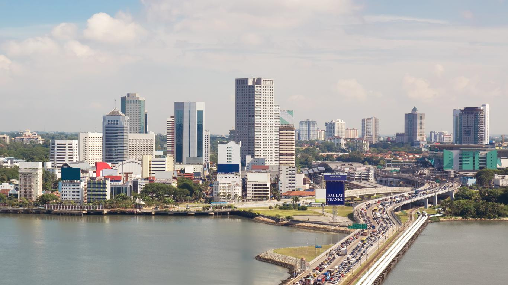

柔佛
柔佛州（马来语：Johor）是马来西亚十三个州之一，首府新山（Johor Bahru，音译“柔佛巴鲁”），皇城麻坡（Muar）。
柔佛州位于马来西亚西部的最南端，东面是中国南海，西面是马六甲海峡，南面隔着柔佛海峡与新加坡毗邻。
面积19016平方公里，374.22万（含35.72万外籍人士，2018年），下辖10个县。
柔佛州最主要的经济活动为服务业、制造业和农业，州政府建立了马来西亚依斯干达（Iskandar Malaysia）经济特区，以及边佳兰的炼油与石油化工综合发展计划（RAPID）。
2016年柔佛州人均GDP 31952令吉，低于马来西亚人均GDP 38887令吉。
柔佛州全年阳光普照，属于热带雨林气候，拥有众多历史建筑和文物、海岛、高尔夫球场、主题乐园。
2003年1月31日，柔佛境内的龟咯岛、丹绒比艾、蒲莱河被《拉姆萨尔公约》列为“国际重要湿地”。
历史
| No. | 柔佛王国的成立 |
|---|---|
| 1 | 旧柔佛王朝 |
| 2 | 柔佛首相王朝 |
| 3 | 柔佛天猛公王朝 |
| 4 | 英日统治时期 |
| 5 | 马来西亚柔佛 |
柔佛王国的成立
柔佛王国一共经历3个朝代更迭，分别是“旧柔佛王朝”、“柔佛首相王朝”和如今的“柔佛天猛公王朝”。
旧柔佛王朝（1511年~1699年）
1511年，马六甲被葡萄牙人占领（马六甲围城战）后，苏丹马末沙逃至柔佛民丹岛，并且还企图从葡萄牙人的手中夺回马六甲。基于苏丹马末沙的不断反攻，葡萄牙终于于1526年从印度果亚派遣舰队攻击并摧毁了民丹岛（宾坦岛之战），苏丹马末沙仓皇逃到苏门答腊甘帕（Kampar）并于1528年驾崩。
1536年，苏丹马末沙的长子，即苏丹阿拉乌丁二世（Sultan Alauddin Riayat Shah Ⅱ）放弃马六甲苏丹的称号，并于1540年创建具马六甲王室血统的柔佛王朝（亦有史册认为苏丹马末沙为柔佛王朝创始人），定都旧柔佛（马来语：Johor Lama）；其兄弟苏丹穆沙法沙（Sultan Muzaffar Shah）则远赴霹雳州建立新王朝。自此，原来马六甲王朝统治区域一分为二。
柔佛王朝除了需要应付葡萄牙，苏门答腊北方也出现了劲敌——亚齐国。三方之间互相攻伐，多是柔佛王朝占下风，当中亦曾发生几次国都遭亚齐焚毁、苏丹遭掳杀的屈辱事件。
1564年苏丹阿拉乌丁二世被亚齐俘获，终于死于亚齐。随后相继即位的苏丹有：目札法沙二世（Muzzafar Syah Ⅱ）、阿都查利拉雅沙（Abdul Jalil Riayat Syah）、阿拉乌丁‧利雅沙三世（Alauddin Riayat Syah III）、阿都拉马雅沙（Abdulah Ma’ayat Syah）、阿都查利沙（Abdul Jalil Syah）、伊伯拉欣（Ibrahim），最后一任具马六甲王室血统的柔佛苏丹为马末二世（MahmudⅡ）。
1699年，柔佛苏丹马末二世由于残暴过度，一天坐轿外出时遭其臣属海军元帅刺杀，享年仅24岁。
柔佛首相王朝（1699年~1866年）
柔佛的马六甲苏丹王朝血统正式断绝，由在任首相敦阿都查利（Tun Abdul Jalil）继位，开创了柔佛首相王朝。由于血统问题，首相王朝立国不久就遭宣称苏丹马末二世遗腹子的锡国（Siak，苏门答腊小国）王子攻击。
为了赶走锡国王子，继任的苏丹苏莱曼（Sulaiman）与来自苏拉威西岛望加锡（Makassar）的武吉斯人（Bugis，又译布吉人）合作，导致了武吉斯人卷入权力斗争中。随着武吉斯人取得最后胜利，武吉斯人首领被委任为副王，掌控大权并与马六甲的荷兰人争夺马六甲海峡及锡矿贸易的经济利益；而苏丹则沦为傀儡。
1796年，在位的苏丹马末三世（Mahmud III）派遣天猛公阿都哈密管辖柔佛，其子天猛公阿都拉曼随后也受到英国承认，为柔佛和新加坡的天猛公。
1812年，苏丹马末三世的幼子苏丹阿都拉曼穆阿占沙被武吉斯人立为苏丹。
1818年，英国人斯坦福·莱佛士抵达新加坡，并欲与天猛公阿都拉曼签订协定，在当地建立殖民据点，但是根据廖内柔佛苏丹和荷兰之间的条约，天猛公无权代表苏丹与外国定约。当时新加坡正由柔佛廖内苏丹阿都拉曼穆阿占沙统治。当莱佛士得知苏丹阿都拉曼穆阿占沙的兄长东姑胡先（Husain）本该是王位继承人（由于其父王驾崩时不在身边而被取消资格），他随即觐见并宣布支持东姑胡先出任苏丹，声称英国只承认东姑胡先为合法的廖内苏丹，而东姑胡先则于1819年2月6日和英国签署条约，租借新加坡予英国为商港用途。尽管英国承认苏丹胡先为柔佛和新加坡的苏丹，但视天猛公阿都拉曼有实质统治权。
1824年，英国与荷兰签署英荷条约，苏丹胡先统治的柔佛本土（包括新加坡）归英国人，而苏丹阿都拉曼穆阿占沙掌控的廖内群岛范围则划归荷兰，至此柔佛首相王朝一分为二。
1844年，天猛公达因依布拉欣还创立了港主制度，开发柔佛。
1855年，苏丹阿里（苏丹胡先的继任者）与新加坡的英国人签署条约，同意将柔佛统治权交予天猛公阿都拉曼之子天猛公达因依布拉欣（Daeng Ibrahim），而苏丹阿里本身的统治仅限于麻坡地区。天猛公达因依布拉欣在华裔富商黄亚福的协助下，在正对新加坡的柔佛南部建立新都 - 丹绒布蒂里（Tanjong Puteri）。
柔佛天猛公王朝（1866年~1914年）
1866年，达因依布拉欣之子苏丹阿布巴卡（Abu Bakar）正式登基为柔佛天猛公王朝第一任苏丹，他在1868年受英国册封为“马哈拉加”（Maharaja）。苏丹阿布巴卡于1877年苏丹阿里驾崩后收回麻坡的统治权。苏丹阿布巴卡将丹绒布蒂里改名为新山（Johor Bahru/音译柔佛巴鲁）。他把新山由一个渔村发展成一个市镇，接着将发展计划逐一延伸到其它的小地方，大力发展港主制度。苏丹阿布巴加采用了称之为“柔佛政府文职机关”的西方制度来管理内政的工作，也将这先进的管理制度提倡给公众。1887年苏丹阿布巴卡册封麻坡为香妃城（Bandar Maharani）。1895年苏丹阿布巴卡颁布《柔佛宪法》，是柔佛州第一位宪法条规的设立者。以后他被冠上“现代柔佛之父”的称号。
第二任天猛公王朝苏丹依布拉欣（Ibrahim）于1895年即位。1900年，苏丹阿布峇卡清真寺开幕，会上演唱的“Bangsa Johor”正式成为柔佛州歌。由于柔佛的发展有赖于各族群、阶层子民，因此歌取取名为“Bangsa Johor”，亦即柔佛子民不分种族。他重视教育，于1902年颁布法令，规定子民皆必须接受教育。1912年，设立行政议会（部长由苏丹委任）。
英日统治时期
马来属邦、马来亚联邦、马来亚联合邦（1914年~1957年）
《1909年曼谷条约》的签订使英国从暹罗手中得到了马来半岛上四个邦国（吉兰丹、丁加奴、吉打和玻璃市）的的宗主权、行政权和管理权。
1914年，柔佛苏丹依布拉欣最终被迫接受英国顾问官制度，柔佛正式接受英国保护，自此与上述四个马来邦国组成马来属邦。相对于马来联邦，马来属邦的内政自主权更高。作为英国最紧密的马来盟国，柔佛州拥有自己的宪法特权，苏丹仍有任命内阁的权利，不过实际上苏丹必须事先与英国顾问官讨论其任命。苏丹依布拉欣在任的1917年，港主制度被取消，还完成了横跨柔佛州的火车轨道，并于1924年建造新柔长堤。
1941年12月，日本发动太平洋战争，英军被日军打败，致使柔佛州也落入日本侵略者手中，直到1945年8月日本投降为止。日本投降后柔佛重新沦为英国殖民地。天猛公王朝第三任苏丹依斯迈（Ismail）经历二战时期，为庆祝日军战败，他在依布拉欣路的游行庆典上接受子民敬礼。
1946年，英国统治的海峡殖民地（不包括新加坡）、马来联邦、马来属邦合并成立了马来亚联邦（Malayan Union），而柔佛租借予英国的新加坡成为英国直属管辖的殖民地。马来统治者因有于日治时期与日军合作之嫌，怕受英殖民政府对付而王位遭罢黜，同意马来亚联邦方案。该政治方案剥夺了马来统治者之政治权利而仅成为马来人的宗教保护者，全体居民将被赋予平等的宪法权力与公民地位，而马来民族主义者认为该政体将使马来族丧失特权，违背他们的政治与经济利益，故强烈反对该方案。
1948年，成立了两年的马来亚联邦（Federation of Malaya）解散，英国将马来亚联邦重组成马来亚联合邦。在新联邦里，柔佛州依然是英国的保护国，与此前的马来亚联邦一样，联邦并不包括新加坡在内。
马来西亚柔佛
1957年8月31日，马来亚联合邦终于独立，柔佛成为其中一个州属。
1963年9月16日，柔佛随其余马来亚联合邦成员州和沙巴、砂拉越与新加坡共同组成新君主立宪制国家——马来西亚。保留了柔佛苏丹及其王室，1965年8月9日新加坡脱离马来西亚成立新加坡共和国。
1981年5月11日，天猛公王朝第四任苏丹依斯干达（Iskandar）继位，并于1984年至1989年出任第八任马来西亚最高元首，然而当时经济不景气没有举办苏丹登基加冕仪式。苏丹依斯干达与马来西亚华社关系密切，曾赠送新山宽柔中学多驾风帆。在他任内柔佛州发展蓬勃，包括设立马来西亚依斯干达经济特区。他也于2009年为位于依斯干达公主城（Iskandar Puteri，旧称努沙再也）的柔佛州新行政中心开幕。
2010年1月23日上午10时21分，已故苏丹依斯干达之长子，即苏丹依布拉欣（Duli Yang Maha Mulia Sultan Ibrahim Ibni Almarhum Sultan Iskandar）在柔佛大王宫依据1895年柔佛州宪法宣誓就任柔佛苏丹。他是柔佛州天猛公王朝第五任苏丹，也是柔佛州第二十三任苏丹。
back to top
地理

| No. | 介绍 |
|---|---|
| 1 | 位置 |
| 2 | 地形 |
| 3 | 河流 |
| 4 | 自然景观 |
| 5 | 岛屿 |
| 5 | 气候 |
位置
柔佛州位于马来西亚半岛的南部，与新加坡相邻。
它是马来西亚最南端的州份. 柔佛州面积为19,102平方公里，是马来西亚面积第五大的州属，东临南中国海，西濒马六甲海峡，南面柔佛海峡。
地形
柔佛州的地形多样，包括了沿海地区、山脉和平原。
东部是山脉区域，而西部则是平原和海岸线。
柔佛州的海岸线总长约400公里，海岸线的大部分，特别是西海岸，被红树林和水椰林覆盖。
东海岸以沙滩和岬角为主，南海岸则由各种岬角和海湾组成。
柔佛州的专属经济区在南中国海的范围较其在马六甲海峡的范围大很多。
河流
柔佛州有许多重要的河流，其中最大的是柔佛河（Johor River），它流经州内并注入柔佛海峡。
在西海岸，峇株巴辖河、麻坡河和笨珍河流往马六甲海峡，而柔佛河、巫来由河、Perepat河、埔来河、士姑来河和地不佬河则流向南方的柔佛海峡。
兴楼河、丰盛港河、大素里里河和小素里里河流往东方的南中国海。
柔佛河流域达2,690 公里，从布鲁木山（居銮东部）和Gemuruh山开始，往下流至丹绒彭利哥。
柔佛河自身则由来自拉央拉央、林桂和沙翁的河流汇集而成，长约122.7 公里。
它的支流包括柏浪眼河、勒巴河、勒班河、班底河、Pengeli河、Permandi河, 士芦育河、斯玛那河、Telor河、Tembioh河和地南河。
位于柔佛境内的其他河流还包括亚逸峇礼河、文律河、Botak Drainage、任罗宏河、大笨珍河、双兰河、善地河以及三峇易河。
自然景观
柔佛州拥有美丽的自然景观，包括森林、水瀑布、海滩和热带雨林。
2005年，官方记录显示柔佛的森林占地391,499,002公顷（967,415,102英亩），其中包含了天然的内陆森林、泥炭沼泽森林、红树林以及泥沼地。
岛屿
澳岛
澳岛(马来语：Pulau Aur)是一座位于马来西亚柔佛州丰盛港县沿海的小岛，岛上有两座高峰互相对峙。岛上多珊瑚，小湖泊，是柔佛的一个旅游胜地。
- 元代旅行家汪大渊曾到此，在所著《岛夷志略》中称为东西竺，“山石嵯峨形势对峙”，地产槟榔，椰心簟，冬暖夏凉，当地人编织椰心簟，卖给唐人。

龟咯岛
龟咯岛(马来语：Pulau Kukup)是一座距海上1公里的笨珍的红树林的岛屿。龟咯岛位于柔佛州笨珍县的西南部，位置朝马来西亚半岛丹绒比艾西北部。
- 主要被红树林和滩涂所覆盖，并有8平方公里滩涂环绕着。2018年，有传言称该岛拥有大量金矿。
- 有各种野生动物，例如猴子，野猪，弹涂鱼，望远镜螺，招潮蟹等。

拉哇岛
拉哇岛(马来语：Pulau Rawa)是一个珊瑚岛，位于马来西亚柔佛州丰盛港县东部海岸外16公里处。拉哇岛广受马来西亚游客和新加坡游客的欢迎。
- 一个相对较小的岛屿。那里没有柏油路，只有少数的人行道。岛的另一边覆盖着白色的沙滩，而另一边有一个多岩石垂直的悬崖。
- 有许多海洋和陆地动物，比如鱼类，鱿鱼，水母，章鱼，马来海雕和爬行动物。还有鲨鱼，黑鳍鲨鱼也可以在拉哇海域里发现。
- 海水清澈。游客可以享受未受污染的白色沙滩、海上浮潜和水肺潜水。
- 拉哇水域是大量珊瑚的繁殖地。岛上只有两家度假村，拉哇旅行者和阿浪拉哇。
气候
柔佛属于赤道多雨气候，每年十一月到二月都会有来自南中国海的季风。
平均气温介于25.5 °C到27.8 °C之间。
西海岸平均降雨量为2,000至2,500毫米，而东海岸的平均降雨量较高，其中兴楼和边佳兰一年内的降雨量超过3,400毫米。
柔佛每年都会经历两次季风期，即东北季风和西南季风。
东北季风由11月开始持续至隔年3月，而西南季风则有5月开始持续至9月，4月至9月则为两个季风的过渡期。
back to top
美食
Restoran Tai Chiang
7, Jalan Jelawat, Taman Sri Saleng, 81400 Kulai, Johor.
Din Kee Beef Noodle
56, Jalan Indah 1, Taman Bukit Indah, 81200 Johor Bahru, Johor.
Restoran Woon Kiang
SH-G-06, Taman Impian Stulang, Jalan Pandan, Taman Stulang Laut, 80300 Johor Bahru, Johor
Kedai Masakan Itik Taika Huat
17, Jalan Kilang Nenas, Taman Sutera Utama, 81300 Skudai, Johor
Warung Roti Canai Bukit Chagar
394, Jalan Tengku Azizah, Bukit Chagar, 80300 Johor Bahru, Johor
Kedai Bak Kut Teh Hin Hock
72, Jalan Dato Mohammed Seth, Taman Tampoi Indah 2, 81200 Johor Bahru, Johor
back to top
乐园

位置：
马来西亚乐高乐园度假村位于马来西亚柔佛州的依斯干达普特里，从吉隆坡和新加坡等主要城市都很容易到达。
主题乐园:
- 马来西亚乐高乐园是马来西亚第一个国际主题公园，也是亚洲第一个乐高乐园。
- 乐园分为多个主题区，包括LEGO Technic, LEGO Kingdoms, LEGO City等。
- 乐园内拥有70多个互动游乐设施、景点和表演，适合2至12岁的儿童参观。
水上乐园:
- 与主题乐园相邻的是乐高水上乐园，提供各种滑水道、波浪池等多样化的水上项目。
- 乐高水上乐园专门为2至12岁的儿童和家庭游客设计。
营业时间与门票:
- 乐园的营业时间会随季节变化，建议查看官方网站以获取最新信息。
- 门票可在线购买或在公园入口处购买。有多种门票选项可供选择，以满足不同的偏好和预算。
联系方式:
- 地址：7, Jalan Legoland, Bandar Medini Iskandar Malaysia, 79250 Iskandar Puteri, Johor, Malaysia
- 电邮: info@LEGOLAND.my || 电话: +607-597 8888
back to top
海边
迪沙鲁海岸（Desaru Coast）
迪沙鲁海岸（Desaru Coast）是一个悠闲的海滩和度假胜地，拥有长达17公里的温暖金色沙滩的海岸线。
坐落在柔佛州的靠海地带，这属于比较僻静的地方是远离城市的喧嚣的最佳好去处。
距离柔佛新山一个小时的车程（距吉隆坡4个小时），无论是和家人、朋友还是夫妻俩，都是周末度假的理想之选！
| No. | 介绍 |
|---|---|
| 1 | 迪沙鲁海边 |
| 2 | 迪沙鲁水果园 |
| 3 | 迪沙鲁鸵鸟园 |
| 4 | 迪沙鲁水上乐园 |
| 5 | 迪沙鲁Dash Outdoor Adventure |
迪沙鲁海边
迪沙鲁因为位于南中国海的原始海滩而闻名，是水上活动的场所（如滑浪、风帆、潜水和划独木舟)。
此外，迪沙鲁亦建有度假酒店及果园（占地100亩的农业旅游乐园）。
{kind=link}
{kind=link}
Desaru Coast的三大豪华酒店

Hard Rock Hotel Desaru Coast
- 距市中心79公里
- 24小时客房服务
- 无线网络和每日客房清洁服务
- 健身中心
- 户外泳池

The Westin Desaru Coast Resort
- 度假村水疗，桑拿和蒸汽浴室
- 具有互动厨房概念的餐厅
- 烧烤设施
- 私人海滩
- 无障碍通道

Anantara Desaru Coast Resort & Villas
- 步行600m即可到达Desaru海滩
- 免费提供自行车
- 海滨无边泳池
- 水疗和按摩设施
- 咖啡馆和餐馆
迪沙鲁水果园
{kind=link}
{kind=link}
果园里拥有超过100种水果和蔬菜，让小朋友有机会了解蔬果种植过程。
您也可以和孩子们回归大自然，尝试采摘水果和享用丰富的水果自助餐！
温馨提醒: 记得在榴莲季节时来参加榴莲自助大餐!
活动：
- 享用水果自助餐
- 玩彩弹射击游戏
- 驾驶全地形车ATV
- 锦鲤鱼塘喂鱼乐
- 票价: 马币25 (成人), 马币20 (3至11 岁儿童)
迪沙鲁鸵鸟园
{kind=link}
{kind=link}
坐落于五湾海滩(Teluk Ramunia)范围的迪沙鲁鸵鸟园为马来西亚最具规模的鸵鸟园，园内拥有逾300只鸵鸟呢！
鸵鸟一般上比成人略高，雄鸟甚至可长到2.5米！它们不会飞，却善跑。
快来一趟生物之旅，也到纪念品专卖店选购以鸵鸟蛋壳制成的独特纪念品！
活动：
- 骑鸵鸟乐
- 喂食鸵鸟
- 尝试踩上鸵鸟蛋
- 观赏如何打开鸵鸟蛋
- 票价: 马币20 (成人), 马币15 (儿童)
迪沙鲁水上乐园

园区拥有一个超大波浪池和五个主题区域，包括儿童乐园专区。
园内设有餐厅可随时喂饱大人小孩的肚子，所以不必携带任何食物哦！
活动：
- 在冲浪墙区练习冲浪
- 沿着本纳瓦河漂浮
- 尝试360度水上过山车
- 试遍所有滑梯和游乐设施
- 票价:马币137 (成人), 马币102 (成人/ 长者)
迪沙鲁Dash Outdoor Adventure
{kind=link}
{kind=link}
Dash Outdoor Adventure在迪沙鲁海滩拥有两个活动地点，他们提供适合各年龄层的水上活动。
企业团建或亲朋好友一起到访的私人团体都可以选择各种配套好好玩一番！
这里提供崭新和性能良好的配备，还有经国际规培格训的员工确保游客们玩得开心又安全！
活动：
- 驾驶水上摩托骑自行车
- 冲浪划独木舟
- 玩滑浪风帆
- 翻滚太空球
back to top